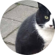
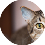
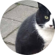
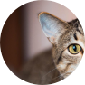
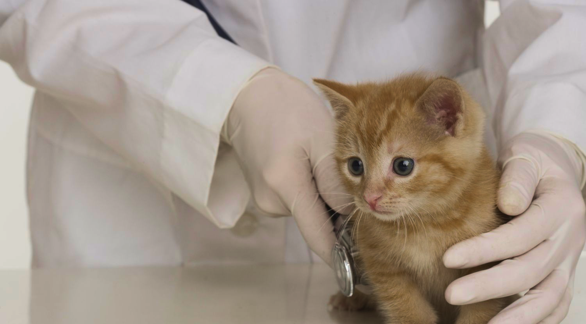

© 2024 Gaterinaria. Todos los derechos reservados.

TESTIMONIOS
De nuestros visitantes
“Estas personas son el equipo de veterinarios amantes de los animales más increíble con el que mi esposa y yo hemos tenido el placer de trabajar. Se especializan en medicina felina y hacen todo lo posible para asegurarse de que los miembros peludos de su familia reciban el mejor cuidado posible. Los hemos utilizado durante años. ¡Reciben mi más alta recomendación!”
- Alguien
“¡El personal aquí es maravilloso! La Dra. Cacciottoli es estupenda, se preocupa genuinamente por asegurarse de que los pacientes tengan una visita lo más libre de estrés posible y también dedica una buena cantidad de tiempo a explicarles a los ansiosos padres de gatitos cómo cuidarlos. Sus precios son razonables y el personal de apoyo es excelente. ¡Definitivamente recomiendo Cat Clinic para las necesidades de sus bebés peludos!”
 



- Otra persona

Nuestro Equipo
Gaterinaria es un hospital veterinario exclusivo para felinos con servicio completo. Nuestra misión es brindar atención veterinaria de la más alta calidad para su gato en un entorno relajado. Nuestra prioridad número uno es ayudar a que su gato viva una vida feliz y saludable durante el mayor tiempo posible.
SOBRE NOSOTROS
ejemplo@gmail.com
(809) 123-4567

Dr. Melissa Lord
Veterinaria
Dr. Lord graduated from Iowa State University College of Veterinary Medicine in 2013. She has always held a specialty affinity for feline medicine. After working for Purina her first year out of school, she worked in emergency medicine for 7 years. While originally from Omaha, Nebraska, Dr. Lord considers St. Louis home. On her days off, Dr. Lord can be found in her backyard drinking coffee with her six chickens, horseback riding around St. Louis, or snuggling her four lovely cats.
Dr. Melissa Lord
Veterinaria
Dr. Lord graduated from Iowa State University College of Veterinary Medicine in 2013. She has always held a specialty affinity for feline medicine. After working for Purina her first year out of school, she worked in emergency medicine for 7 years. While originally from Omaha, Nebraska, Dr. Lord considers St. Louis home. On her days off, Dr. Lord can be found in her backyard drinking coffee with her six chickens, horseback riding around St. Louis, or snuggling her four lovely cats.
Dr. Melissa Lord
Veterinaria
Dr. Lord graduated from Iowa State University College of Veterinary Medicine in 2013. She has always held a specialty affinity for feline medicine. After working for Purina her first year out of school, she worked in emergency medicine for 7 years. While originally from Omaha, Nebraska, Dr. Lord considers St. Louis home. On her days off, Dr. Lord can be found in her backyard drinking coffee with her six chickens, horseback riding around St. Louis, or snuggling her four lovely cats.
Dr. Melissa Lord
Veterinaria
Dr. Lord graduated from Iowa State University College of Veterinary Medicine in 2013. She has always held a specialty affinity for feline medicine. After working for Purina her first year out of school, she worked in emergency medicine for 7 years. While originally from Omaha, Nebraska, Dr. Lord considers St. Louis home. On her days off, Dr. Lord can be found in su backyard drinking coffee with her six chickens, horseback riding around St. Louis, or snuggling her four lovely cats.
Dr. Melissa Lord
Veterinaria
Dr. Lord graduated from Iowa State University College of Veterinary Medicine in 2013. She has always held a specialty affinity for feline medicine. After working for Purina her first year out of school, she worked in emergency medicine for 7 years. While originally from Omaha, Nebraska, Dr. Lord considers St. Louis home. On her days off, Dr. Lord can be found in su backyard drinking coffee with her six chickens, horseback riding around St. Louis, or snuggling su four lovely cats.